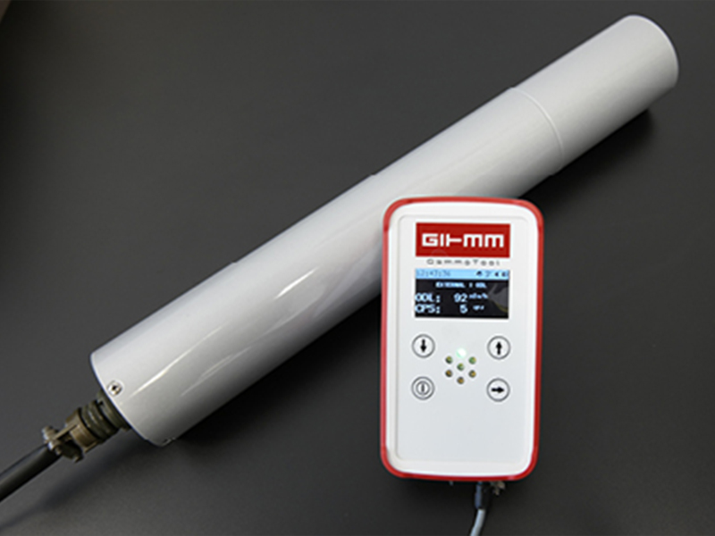

GAMMA DETECTORS
GAMMO GAMma MObile
Radiation measuring probes for mobile use
With GAMMO, we have met the customer's request for an upgrade of our RS04 gamma probe and our GSP02 gamma spectral probe for mobile applications, such as in-situ isotope identification.
The newly designed product group GAMMO gamma ray detectors for the identification and evaluation of radioactivity is now perfectly suited for mobile use.
-
GAMMO Product Group:
- GAMMO-TOOL GT1D
- GAMMO-TOOL GT2D
- GAMMO APP
- GAMMO Portal
- GAMMO CASE
- GAMMO Handle

GAMMO – makes you mobile
With GAMMO (mobile gamma radiation measurement detectors), our proven RS04 gamma probes and GSP02 gamma spectrum probes and our latest development COMO (Contamination Monitor) can now be used for mobile applications.
GAMMO – is modular
The sophisticated GAMMO concept behind it allows our users either to use a gamma probe RS04 or to upgrade a stationary detector, which is used for example for a radiation monitoring system, step by step with GAMMO to a mobile detector – without having to buy one new gamma probe RS04.
GAMMO – makes you flexible
In addition, the same components from GAMMO can be used in the same way for our gamma-spectrum detector GSP02 and COMO Contamination Monitor – thanks to their compatibility – that makes you flexible – for many applications.
GAMMO APP – informs and stores
With the GAMMO APP, which runs on any Android device (smartphone, tablet), you will receive the measurement results via Bluetooth from the GTx acoustically, visually and graphically.
- Acoustic when exceeding freely selectable warning thresholds
- Graphical (Diagram View)
- Visually as ambient dose equivalent
- Data export to GAMMO Cloud and GAMMO Portal
GAMMO Portal – networks, manages, locates and documents
Our GAMMO portal, a WEB application, connects up to 10 stations and shows you time and geo-stamps:
- Map for the current location incl. dose rate and movement data
- Measured values in the diagram view of all stations
- Station administration
- CSV export for reports
Advantages of GAMMO
- Protects your investment because of flexible deployment and modular extensibility
- Works with any standard mobile Android device
- Easy to operate, fast to use, cost-effective
- Varied combination and application possibilities
- Very robust designed for indoor and outdoor use, maintenance-free, low weight
- Up to 16 hours autonomous operation for GT1D and up to 2 weeks GT2D
- Data export in CSV format
GAMMO Components
- The Gammo Tool powers the gamma radiation meters and transmits the data via USB to a PC or via Bluetooth to our GAMMO APP and/or stores it on an internal μSD card. Or you send via WIFI the data to a center software solution.
- The Gammo Tool GT2D is equipped with a Geiger-Müller counter tube with a measuring range of up to 40 mSv / h and thus a very compact gamma probe, which fully utilizes the GT.
- The GAMMO APP can be installed on any Android mobile device and receives gamma probe data via Bluetooth. The GAMMO APP visually and graphically displays the current radioactive measured value in dose rate and can also warn acoustically if the freely adjustable warning thresholds are exceeded. In addition, the APP sends all relevant data via GSM or WLAN to the GAMMO portal.
- GAMMO Portal is a WEB application that can be installed locally on a WIN10 or Linux computer. It can manage up to 10 gamma stations and documents the dose rate with current location and movement data on the map. However, the measured values can also be viewed graphically in diagram view and used for reports by means of CSV export. GAMMO Portal is also available as a cloud service (monthly billing including all updates).
- The GAMMO handle allows one-handed use of the gamma detectors by mounting the probe, mounting device for GT and handle with belt attachment. Easy and quick installation with only 2 screws.
- The GAMMO CASE has space for all components for easy transport and allows measurements during transport (eg in the boot).
Applications of GAMMO Mobile Gamma-Ray Detectors
1) Investigation of radioactive contamination on siteInteresting areas can be inspected immediately on site for any radioactive contamination, without tedious collection and labelling of samples (when & where), and then sent to the laboratory. Locally, you can investigate more targeted potentially contaminated areas based on the immediate indication of radioactive contamination.
2) COMO – Measurement on-site without power connection
With GAMMO, you can not only use COMO in fixed locations where power is available, but also where you actually want to measure. For example, COMO can be used directly in production without having to visit the company's own laboratory.
3) Measurement of radioactively contaminated raw materials without sampling
Wherever you can not take samples, or only with great effort, is a mobile gamma probe the solution, for example, at scrap dealers, waste recyclers or metal foundries, where a radioactive contaminated raw material or waste (scrap) must be checked before use.
- Gamma sensor: GT1D: no internal sensor (only external) | GT2D: internal sensor available (GM-Tube)
- Charging/Communication connection:
UIN: 4,5V – 6V (DC); IIN: max. 1800 mA1 | IIN_charge: up to 1000mA
UOUT: 5V +/- 10% (DC); IOUT: max 2 A | Communication: USB-Signal - Internal probe: GM-Tube (up to 100mSv/h)
- Temperature range: -20 °C to +60 °C
- Wireless communication: Bluetooth: BLE (Bluetooth Low Energy)2 | WiFi: 802.11 b/g/n; 2,4Ghz
- Wired communication: USB-Signal
- Displays: 2.42” OLED display (128 x 64px (~30 x 57 mm)) | 7 LED multicolour | 2 LED charging status
- Buzzer: Yes
- Vibration: Yes
- Shock protection: Yes
- Real-time clock: Yes
- Data storage memory: Yes (μSD-Card)
- Flashlight function: Yes
- Powerbank function: Yes
- GPS: GPS, GLONASS, QZSS - Supports DGPS, SBAS (WAAS/EGNOS/MSAS/GAGAN)
- Internal accumulator: nom. 7500 mAh; nom. 3,7 VDC LiIon
- Operation time: GTx + RS04: up to 16h
- Charging time (GTx switched off): Up to 8h (depending on charge current)
- Connections IP67: Yes
- Dimensions (incl. shock protection): LxWxH 170x95x44 mm
- Weight (incl. akku. & shock protection.): GT1D: approx. 450 g | GT2D: approx. 480 g